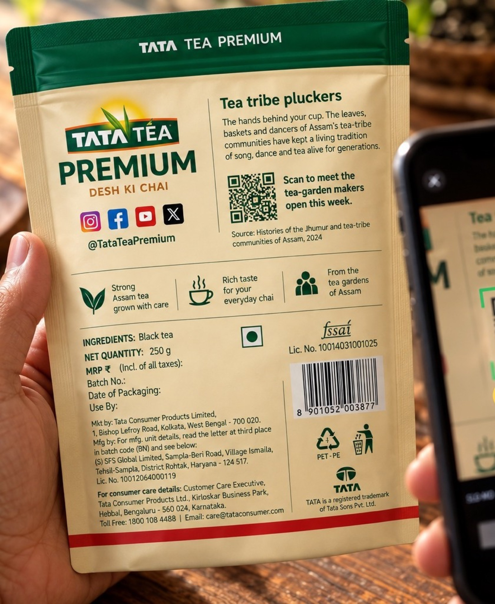
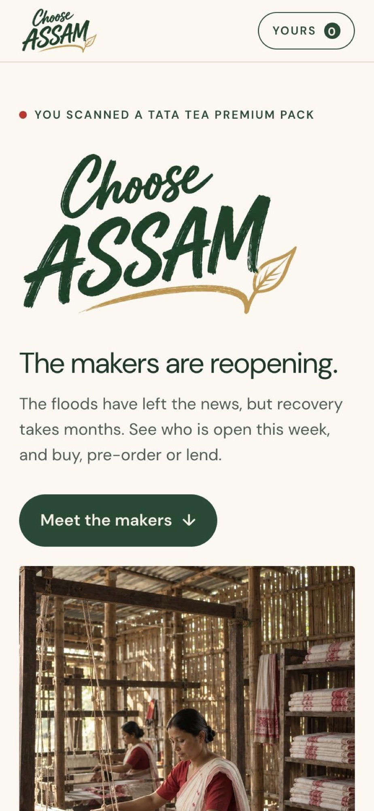
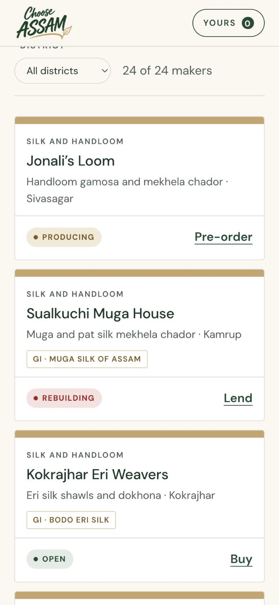
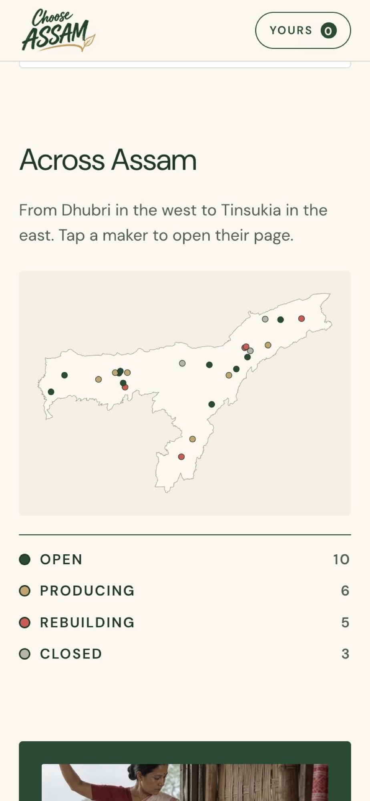
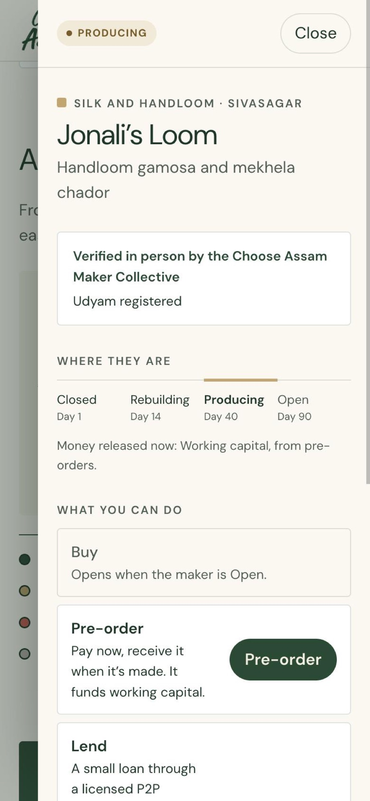

After a flood, Tata Tea uses its packs and ads to send people to Assam’s makers, so they can buy from them instead of donating.
Problem
Many people helped Assam during the floods with food, money and rebuilt homes. Small businesses lost their stock and customers, and reopening takes months. People still want to help, but online donation drives rarely show where the money goes or what it changed.
What I did
The module brief was to tie a social cause to a brand and design a campaign system. I chose the rebuilding of small businesses after the floods, with Tata Tea Premium: six community pack editions, a QR code on every pack and ad, and a maker platform where each maker’s status decides how people can help.
How it was made
I wrote the brief and the system, designed the pack system and built the platform. The photographs, patterns and film were generated with AI, and I art-directed them.
Status
Speculative and untested. Success would be measured by repeat orders per maker, and how many makers reach Open within 90 days.
01The communication ecology
The communication ecology
Where people see it
- Film
- Social media
- Tea pack
- Billboards
- Gift box
How they get there
What they can do
- Buy
- Pre-order
- Lend
Who it reaches
- Closed
- Rebuilding
- Producing
- Open
A maker’s status decides which actions are open.
Makers post updates, which appear on social media and the platform and bring people back
02After the water


Buy from makers instead of donating.
Makers need customers more than one-time help. An order pays them for their work, and the buyer can order again.

Already done
Similar campaigns exist. None of them connects a product to a specific maker who can be paid directly.
Tata Tea, Desh Ke Dhaage
Limited-edition packs featuring handloom weavers. They credited the craft but did not link to any maker.
#KeralaIsOpen, 2018
A campaign that brought tourists back to Kerala after the 2018 floods. It focused on tourism, not on craft makers.
Chekutty, 2018
Dolls made from flood-damaged saris, sold to support weavers in Chendamangalam. It was one product from one town.
03The makers


Each pattern is based on one community’s craft.
The campaign covers six communities. Each pack uses a pattern based on one community’s craft and names that community on the front.
04What changed


The first pack used the gamosa pattern. It looked Assamese, but it did not credit any community. Each edition now names one community and uses a pattern based on its craft.
05Six editions



The back has the community’s story, a source and a QR code.
The source shows where the craft is officially recorded. The QR code opens a list of makers who are open this week.
06Out in the world


07The platform




Makers who are Closed or Rebuilding can only receive loans. Pre-orders open once they start producing, and purchases once they are Open. Each maker page shows where the money goes. Open the live platform ↗
Tradeoffs
What I chose, and what it cost.
Project notes
How the system works
Every pack and ad carries the same QR. It opens the maker platform, where each maker’s status decides what you can do. A maker collective checks every maker and posts their updates.
Reach · Tata Tea’s media
- Film60 seconds, told once at scale
- SocialMaker updates, every week
- PackIn the kitchen every morning
- ShelfEnd-caps in stores
- OutdoorBillboards that name a maker
Bridge
- One QRSame code on every surface, one destination
Platform · the microsite
- BuyFrom makers who are open
- Pre-orderPay now, goods later; funds working capital
- Lend or backThrough regulated partners
Rules
- Status engineClosed to Open; sets which money can reach a maker
- Trust ledgerPublic proof for every maker
Ground
- Maker collectiveVerifies makers, posts updates
- MakersCraft, food, homestays
- Regulated railsEscrow, a licensed P2P lender, the Social Stock Exchange
Maker updates feed the ledger, the pack and social
Hover or tab to a part to see what it connects to
Backing makers, legally
Equity crowdfunding isn’t legal in India, so the platform uses pre-orders, a licensed lending partner and the Social Stock Exchange.
Where each craft is recorded
What’s still open
- 01The patterns and portraits are generated. A real edition would be drawn with each community and checked by them.
- 02The Majuli pattern needs checking against real satra masks.
- 03Real makers on the platform, in place of the illustrative ones.
Sources
- Assam State Disaster Management AuthorityFlood Reporting and Information Management System (FRIMS)
- The SentinelGI tags for Assam’s traditional products, 2024
- GKToday22 products added to the GI registry, March 2024
- GKTodayJhumur and Assam’s tea-tribe communities
- Tata Consumer ProductsTata Tea Premium, Desh Ke Karigar and Desh Ke Dhaage
- Social SamosaSamsonite #KeralaIsOpen, 2018
- The DielineShelf Life 117: Who does artisanship belong to?
- Tre AciniProduct shown where it is made
- Dr.ParrotOne system, a colour per product
- Belch & BelchAdvertising and Promotion: An Integrated Marketing Communications Perspective
- McDougallMedia Literacy for the Communication Ecosystem
- Client
- Tata Tea Premium
- Project
- Designing Communication Ecologies · M.Des, UPES
- Role
- Concept, system design, packaging, art direction, platform build
- Deliverables
- Film · Packs · OOH · Microsite · System